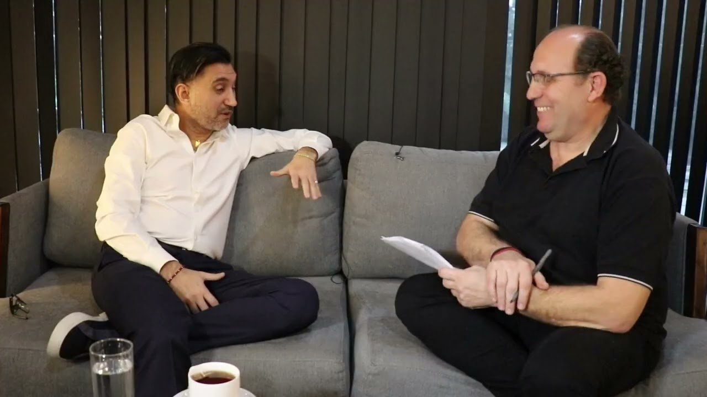

Institucional

Ariel Vallejo, fundador y CEO de Sur Finanzas, se sentó a conversar con el canal Mirada 360 en una entrevista extensa, dividida en seis partes. Habló de sus orígenes, de cómo se armó la empresa, de los años difíciles y de lo que viene. Estos son los puntos principales.
Mirá la entrevista completa, en seis partes, en el canal de Mirada 360 →
“Tengo noción de los números desde los 8 años”, cuenta Ariel. Nació en 1985 en Banfield, en una familia trabajadora: lo criaron su mamá y sus abuelos. Dice que eso fue lo que más lo motivó a crecer.
A los 14 años organizó torneos de fútbol interbarriales en la calle, con cuatro adoquines como arcos. La inscripción costaba un peso por equipo, cada jugador pagaba diez centavos por partido y él se quedaba también con el puesto de bebidas. “Siempre voy por todo”, resume.
Se recibió de contador y ejerció la profesión entre 2010 y 2018. En el camino tuvo negocios de todo tipo: una panadería, un boliche, una tienda de café, un corralón de materiales, una agencia de remises. “Sé lo que es no tener, sé lo que es tener mucho y sé lo que es volver a tener”, dice. Y aclara qué lo mueve hoy: “El incentivo de laburar es dar trabajo y demostrar que alguien que viene de abajo puede”.
Todo arrancó con una pequeña casa de cambio. Con la pandemia hubo que frenar, y el 17 de octubre de 2020 abrieron el primer local a la calle, en Monte Grande. En diciembre de ese año, con el microcentro reabriendo, sumaron otro en Suipacha y Corrientes.
“Ahí cambió el escenario cien por ciento”, recuerda. Empezaron a operar con otros cambistas, financieras y bancos, a trabajar en el mercado mayorista y a ganar agilidad.
En 2021, pasando por el centro de Adrogué, junto a la barrera, vio un cartel de alquiler en lo que había sido una sucursal del Banco Santander Río. Fue a verla un día de lluvia: estaba abandonada y con goteras por todos lados. Igual la alquiló, y a los quince días tenía las llaves.
Le puso fecha a la obra y la cumplió: el lunes 1 de noviembre de 2021 abrió el primer local de Sur Finanzas.
Ahí nació la idea que define a la empresa: BNB, Banco No Banco. “Al no ser banco, podés tener actividades financieras de diferentes rubros, cada una en una sociedad distinta”, explica.
Así se armó el grupo: la casa de cambio, Sur Finanzas Group S.A. como proveedor de crédito no financiero (préstamos, gestión y compra de cheques), otra sociedad para el alquiler de cajas de seguridad y otra para la red de cajeros automáticos.
Para alguien acostumbrado al ritmo de la casa de cambio, fue un cambio grande: armar áreas de compliance, prevención de lavado, créditos y legajos, y sumar gerentes. En 2022 siguió la expansión con sucursales en Morón, Lomas de Zamora, Banfield, Burzaco y el Shopping Boulevard, hasta llegar a unas diez.
En 2023 el grupo sumó un proveedor de servicios de pago, que pasó a llamarse Sur Finanzas PSP. La primera billetera virtual no funcionó, pero después, de la mano de un banco sponsor, llegaron las cuentas para comercios, el QR interoperable y las terminales de cobro propias.
Para llegar al público, Sur Finanzas apostó fuerte por el fútbol: fue sponsor de la AFA, de la Liga y de más de quince clubes. “La exposición que tuvimos siendo sponsor fue lo mejor que me pasó en la vida”, dice Ariel.
El 1 de diciembre de 2025 la operación se interrumpió por una causa judicial que todavía sigue su curso. Ariel sostiene que está a derecho, que es inocente y que confía en la Justicia. En agosto de 2026 se liberaron el CUIT de Sur Finanzas Group S.A. y el suyo, lo que permite volver a operar una parte de los servicios.
Consultado por el endeudamiento de la gente, Ariel es claro: “No está bien que la gente se endeude, y menos con tasas usurarias”. Cuenta que lo ve a diario en el conurbano, con comerciantes atrapados por prestamistas que cobran cuotas diarias imposibles de pagar.
Por eso, dice, hace falta que alguien regule, y hace falta educación financiera: sin educación no hay trabajo, y sin salud no se puede trabajar. Son las dos cosas que más repite a lo largo de la charla.
Y agrega una convicción personal: “La vida fue bastante generosa conmigo. Llega un momento en que tenés que empezar a dar”. Por eso sostiene eventos solidarios desde hace años, muchos de ellos sin difusión.
Sur Finanzas está en pleno relanzamiento, con una marca renovada y más tecnología e inteligencia artificial. La operación vuelve con las actividades que ya están habilitadas:
“Es volver a empezar, como siempre en la vida”, cierra Ariel. “Lo único favorable de todo lo malo es que volvés a empezar con más experiencia”.
Contanos qué necesitás y te ayudamos a encontrar la mejor solución.